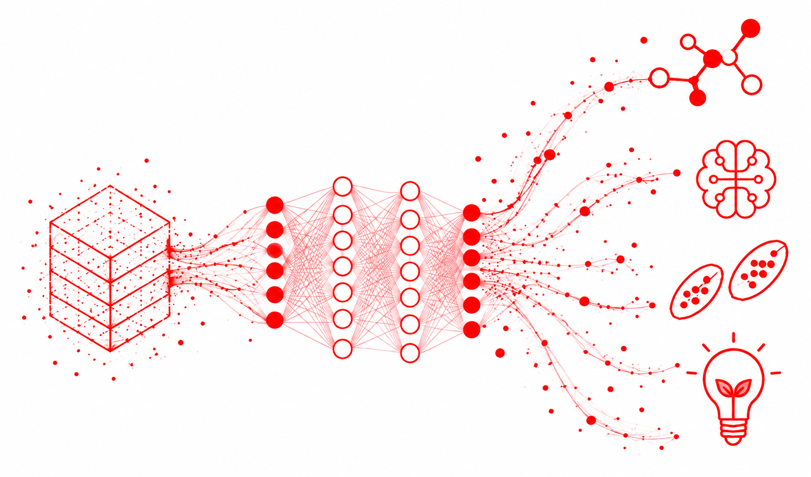
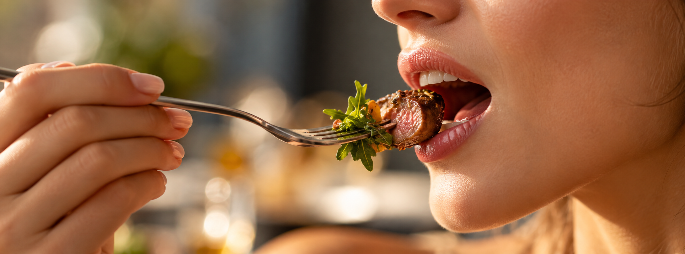
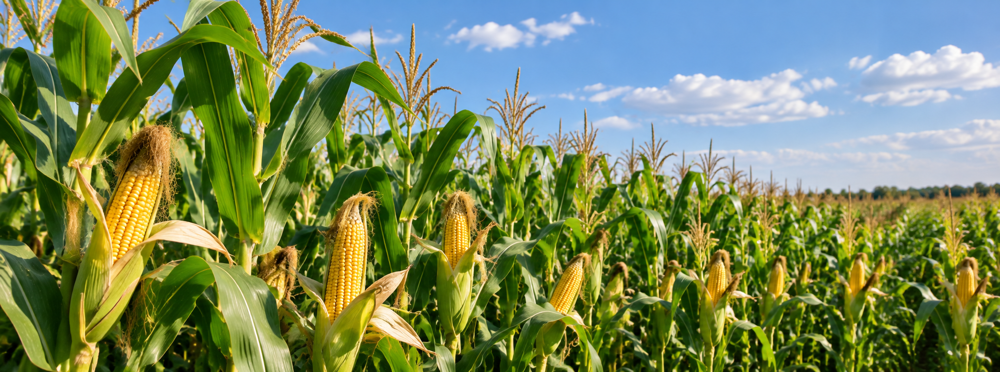

Research
Our work aims at building a digital flavor platform that accelerate discoveries through faster innovation cycles.
Digital Flavor
Flavor is one of the most complex human sensory experiences and still lacks a digital representation. The premise of flavor digitization is that transforming flavor into structured, machine-readable data will enable discoveries at an unprecedented scale and speed.
FIG is working toward this vision by developing an open data infrastructure that integrates high-throughput chemical and sensory measurements into standardized, machine-readable datasets. By connecting molecular composition, sensory perception and adjacent food data such as crop genetics and engineering, FIG aims to establish the foundation for AI-powered flavor discovery to support a resilient food system in our changing world.

To feed this infrastructure, FIG research is organized around several axes:
Genesis and Fate of Flavor in Foods
Studying compound formation, from raw materials to finished products with a particular emphasis on Maillard browning and reaction flavors; interactions between flavor and food matrices and the impact on overall perception and drivers of liking
Flavor Perception and Cross-Modal Interactions
Understanding how the multi-modal aspect of flavor can be leveraged for novel flavor design including the discovery of novel flavor modulators and the development of strategies for flavor modulation

Flavor and Bioeconomy
Adding value to agricultural co-products and developing novel flavor systems using bio-based materials to ultimately increase the demand for local Nebraska crops
